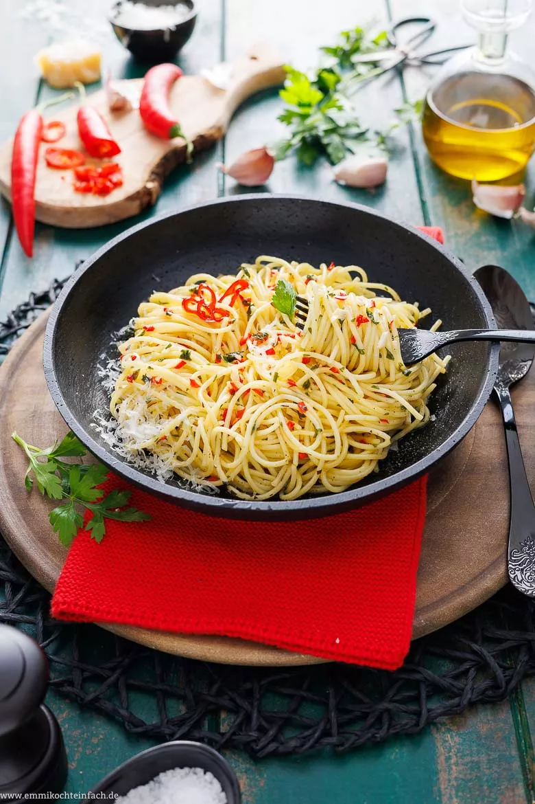

Return to Recipes
Spaghetti Aglio e Olio

Enjoy pasta the way it was meant to be enjoyed
Ingredients
- Update Ingredients
- 500 g spaghetti
- 125 ml Olive Oil
- 30 g Parsley
- 3 red peppers, fresh
- 5 cloves garlic
- 1 pinch seasalt
- Parmesan
Steps
- Prepare spaghetti al dente, as indicated on packaging
- Wash, dry, and finely chop parsley. Wash and seed the red peppers and dice finely
- Peel garlic and dice finely
- In small pan, over medium heat, heat olive oil
- Briefly add Garlic on it's own, then add peppers and parsley
- Stir until heated, add sea salt
- Add Oil mixture to prepared spaghetti and mix thoroughly